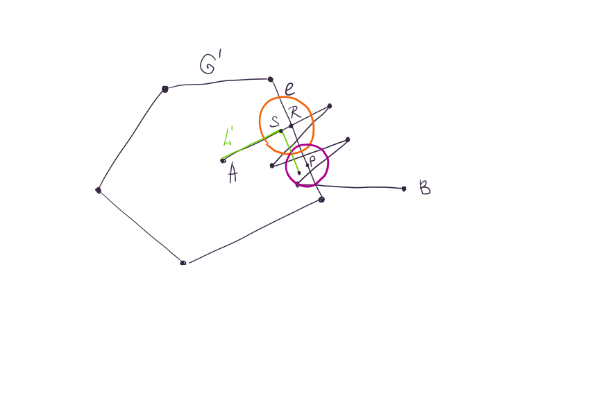

Определение: Пусть \(A\) и \(B\) подмножества множества \(C\). \(A \sqcup B\) обозначает, что \(A \cap B = \varnothing\) и \(C = A \cup B\).
Определение: Пусть \(G =
(V, E, \partial)\) и \(G’ = (V’, E’,
\partial’)\) – графы. Отображение графа \(G\) в граф \(G’\) – это \(f: V
\sqcup E \to V’ \sqcup E’\), такое, что \(f(V) \subset V’\), \(f(E) \subset E’\) и \(f(\partial(e)) = \partial’(f(e))\,\,\,\, \forall e
\in E\). Если отображение \(f\)
графов \(G\) и \(G’\) взаимнооднозначно, то \(f\) – изоморфизм графов \(G\) и \(G’\), а графы \(G\) и \(G’\) – изоморфные.
Обозначается: \(G \cong
G’\).
Определение: Граф \(G = (V, E, \partial)\) иногда называют комбинаторным.
Утверждение: Отношение изоморфности на графах – отношение эквивалентности.
Доказательство: \(\,\,\,\,\blacksquare\)
Утверждение: Пусть \(G \cong G’\). Тогда топологические графы \(X_{G}\) и \(X_{G’}\) гомеоморфны.
Доказательство:
Определение: Пусть \(f: X_G \to Y\) – вложение графа \(G\) в пространство \(Y\). Образ \(f(X_G) \subset Y\) – геометрическая реализация графа \(G\). \(f\)-образы вершин и ребер графа \(X_G\) – вершины и ребра геометрической реализации. Существует взаимнооднозначное соответствие между вершинами и ребрами реализации и вершинами и ребрами графа, поэтому их можно отождествить и смотреть на геометрическую реализацию, как на множество точек(вершин) \(Y\), соединенных непрерывными кривыми без самопересечений. В таком случае отображение инцидентности переводит кривую в множество ее концевых точек.
Определение: Граф – планарный, если существует его вложение в плоскость.
Определение: Геометрическая реализация планарного графа – плоский граф.
Определение: Пусть \(\Gamma \subset \mathbb{R}^2\) – плоский граф. Компоненты линейной связности \(\mathbb{R}^2\setminus \Gamma\) – грани \(\Gamma\).
Определение: Граф без циклов – лес.
Определение: Подразбиение ребра графа \(G\) – это …
Теорема: (формула Эйлера) Пусть \(G\) – конечный плоский граф. \(v, e, f, k\) – количество его вершин, ребер, граней и компонет связности. Тогда справедлива формула: \[v - e + f = 1 + k\]
Доказательство:
Можно доказывать для графа, все ребра которого отрезки, так как по утверждению можем построить граф, все ребра которого ломаные, а добавив в граф в качестве вершин точки ломаных, и вместо ребра-ломаной отдельные ребра для каждого звена ломаной, получим граф, для которого формула элера будет верна, если она была верна для исходного, и неверна иначе.
Индукция по количеству ребер \(e\).
База: \(e = 0\). Тогда \(k = v\) и \(f = 1 \,\,\,\,\blacksquare\)
Шаг: Разберем два случая.
По теореме Жордана \(\mathbb{R}^2 \setminus C\) состоит из двух компонент линейной связности. Пусть \(p\) произвольная внутренняя точка на ребре \(e\). Пусть \(U(p)\) окрестность \(p\), такая, что \(U(p)\cap (G \setminus e) = \varnothing\). Ломаная \(C\) разбивает \(U(p)\) на две компоненты линейной связности. Возьмем точки в разных компонентах \(U(p)\setminus G\). До выбрасывания ребра \(e\) они лежали в разных компонентах линейной связности \(\mathbb{R}^2 \setminus C\). После выбрасывания они находятся в одной и той же компоненте. То есть количество граней уменьшилось хотя бы на \(1\).
Докажем, что количество граней уменьшилось ровно на \(1\). Пусть точки \(a\) и \(b\) до выбрасывания ребра \(e\) были в одной грани, а после выбрасывания оказались в разных. Тогда можно соединить каждую из этих точек с \(U(p)\setminus G\) ломаной, не пересекающей \(G\), то есть точки до выбрасывания лежали в гранях, примыкающих к ребру \(e\).

Пусть точки \(a\) и \(b\) можно соединить ломаной, не пересекающей \(G \setminus e\).
\(\,\,\,\,\blacksquare\)
Определение: Графы гомеоморфны, если гомеоморфны их топологические графы.
Теорема: Граф \(G\) – планарен \(\Leftrightarrow\) никакой подграф графа \(G\) не гомеоморфен \(K_{3, 3}\) или \(K_5\).
Доказательство: \[\Rightarrow\]
Графы \(K_{3, 3}\) и \(K_5\) непланарны \(\,\,\,\,\blacksquare\)
\[\Leftarrow\]
сложно